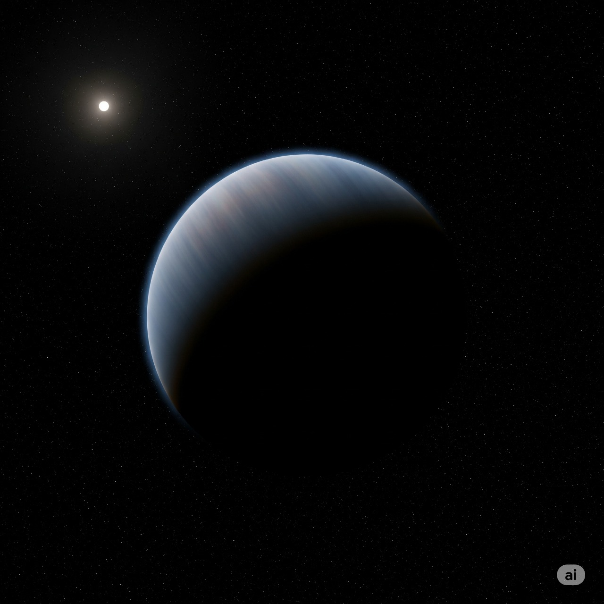

The process of Chemosynthesis
Chemosynthesis
Chemosynthesis is the process by which certain organisms produce food (organic compounds) using energy from chemical reactions, instead of sunlight. Seawater seeps down through cracks on the ocean floor, gets superheated by magma below, reacts with hot rocks (dissolving minerals and gases), and then gushes back out as hydrothermal vent fluid.
Hydrothermal vents and cold seeps are the "cities" of Poseidon, releasing a rich cocktail of chemical compounds like hydrogen sulfide ($H_2S$), methane ($CH_4$), and dissolved iron ($Fe^{2+}$). These serve as the fundamental energy sources for all life on the planet.
Formation of Heat/Energy
Water seeps into cracks in ultramafic rocks (rich in Fe, Mg). Produces molecular hydrogen (H₂) which is primary energy carrier for microbes. Hot water dissolves minerals from rocks which releases methane (CH₄), hydrogen sulfide (H₂S), ammonia (NH₃), CO₂.These compounds are electron donors and carbon sources for life. Eruptions release SO₂, H₂S which are more energy subtrates. Cosmic rays + water produce small amounts of H₂ and oxidants.
The Biosphere
Ideal Chemosynthetic Planet
Poseidon is a water world, entirely covered by deep oceans, with a radius slightly smaller than Earth and a gravity just enough to hold its waters and atmosphere. Beneath the waves, the ocean floor is made of basalt and ultramafic rocks, riddled with cracks and ridges. Here, hydrothermal vents present throughout the bedrock gush hot, mineral-rich fluids, releasing hydrogen, methane, and hydrogen sulfide which act as the fuel for life.
The atmosphere is well balanced with a surface pressure of 2-3 bar, mostly composed of nitrogen and carbon dioxide, with traces of methane and sulfur gases. It protects the oceans from harmful radiation and keeps the chemical ingredients dissolved, ready for microbes to use. Sunlight barely reaches the surface, but life doesn’t need it.
Near the vents, microbes thrive, using the chemicals to build organic matter. These microbial communities grow, spread across the oceans, and over time support more complex, multicellular life. On Poseidon, life doesn’t rely on the sun — it flourishes purely on the planet’s chemistry, proving that wherever energy, water, and minerals exist, life can find a way.

Evolution of Life (Video)
Slow-moving, crab-like creatures with thick, mineral-plated shells, these "Lithovores" graze on the dense microbial mats surrounding the vents. Their shells, made of calcium carbonate and iron sulfides, provide both formidable protection and a metallic appearance.
Family Tree
The following flowchart visualizes the evolutionary path of life on Poseidon, from the initial chemical gradients to a fully-developed ecosystem.
What Ifs?
As we envision Poseidon, we're left with many questions. These scenarios challenge us to consider how life could adapt and evolve under new, dramatic circumstances.
Hydrothermal vents stop or decrease
Energy supply drops, causing microbial mats to shrink. Higher life struggles and the ecosystem collapses in vent regions.
Ocean depth decreases significantly
Reduced vent pressure leads to less chemical solubility and fewer habitats. Temperature may fluctuate more, causing microbial stress.
Atmosphere becomes thinner (<1 bar)
Less radiation protection and dissolved gases decrease. This makes surface microbes vulnerable and drops the chemical energy availability.
CO₂ levels drop drastically
Microbes can't fix carbon efficiently, leading to slower growth and less biomass for higher organisms.
Ocean temperature rises too much (>320 K)
Many microbes cannot survive. Chemical reactions may shift, leading to ecosystem collapse or requiring significant species adaptation.
Excess volcanic activity
Overproduction of toxic gases like H₂S and SO₂ causes a chemical imbalance, putting stress on microbial communities.
Ocean currents weaken
Slower dispersal of microbes leads to local extinctions and reduced genetic exchange and biodiversity.
Methane (CH₄) availability decreases
Reduced chemical fuel for methanogens results in slower energy production and lower ecosystem productivity.
Life spreads beyond vents
Creates secondary habitats and a more diverse ecosystem, leading to higher stability and resilience.
New chemical sources appear
Introduces new niches, promoting species diversification and more complex ecosystem dynamics.
Microbial Population Dynamics
Life on Poseidon is resilient, but it thrives within a specific temperature range. This graph illustrates how the overall microbial population responds to changes in the ambient deep-sea temperature.
Witness Poseidon in Motion
Dive deeper into Poseidon's world with our interactive simulation. Explore the deep-sea vents, witness the bioluminescent Siphonophores, and watch the Lithovores graze on microbial mats. The simulation, created by my teammate, is a live, interactive experience of our concept.
Launch Simulation
(Opens in a new tab)
About Us
This project was created for the NASA Space Apps Hackathon. We are a team of three. Our goal was to push the boundaries of astrobiology and planetary science by envisioning life beyond Earth's traditional parameters.
Problem Statement: Beyond Sunlight: An Aquatic Chemosynthetic World. Presented to you by Quantum Quasars
You can find more details about our project on our GitHub repository.